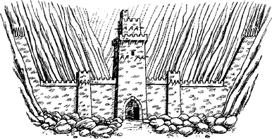

196
The track and the stream wind their way towards a narrow gap in the Durncrag Range. Fixedly you stare at this gap. The longer you gaze, the more certain you are that it is a mountain pass, allowing the path to continue through to Argazad. You decide to press on and traverse the pass. Hopefully, the track will lead to the naval base where you can attempt to steal, or stow away on, some means of transport that will carry you to Aarnak. The naval base must receive equipment from a Darkland city-fortress, and it is likely that Aarnak is one such source of supply.
It is nearly dusk when the stony path reaches the narrow, boulder-strewn approach to the pass. It has been a long and tiring trek, yet in spite of your fatigue your senses warn you in good time of the danger that lies ahead. The pass is blocked by a wall and a stone watchtower, both guarded by Giak soldiers. Carefully you leave the path and creep along the bank of the stream, remaining hidden from view as slowly you edge your way nearer to the Giak outpost. An iron-banded gate in the centre of the wall allows traffic to use the pass, but it is closed and guarded by sentries. As dusk turns to darkness, you continue to observe every detail of the outpost and the surrounding mountains, in the hope of finding a way through.
{kind=link}

If you wish to attempt to scale the wall, turn to 86.
If you decide to avoid the outpost and search for an alternative route across the mountains, turn to 117.